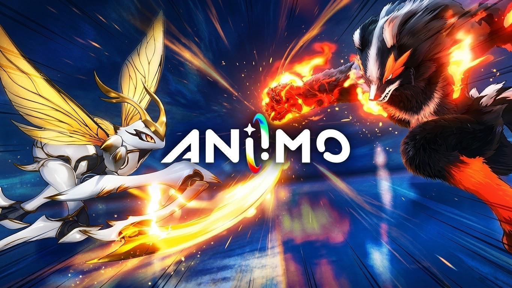

Attenzione: da qui la trama è raccontata fino alla fine.
Ed eccoci alla storia che il giocatore vive in prima persona. Arrivi da Astra come osservatore speciale, con l'idea di raccontare la tua avventura in diretta. La guida Nicole ti insegna a catturare e Starfall Valley è il tuo parco giochi. Poi il tuo terminale, BINI #9, capta dati sconosciuti, impazzisce e viene inghiottito da un enorme cubo antico, che trascina dentro anche te. Nel profondo delle rovine, i murali mostrano umani e Aniimo; i simboli del sole e della luna si animano e diventano due piccoli Aniimo parlanti, Helion per il Sole e Lunara per la Luna. Accetti la benedizione di uno dei due, il cubo si risveglia, arrivano i rinforzi dell'Istituto e, facendo Twine con il nuovo compagno, riesci a respingerlo. Esausti, i due Aniimo tornano piccoli: il tuo resta con te, l'altro torna a dormire nel murale. Di nuovo ad Astra, il direttore Oswen ti invita a entrare nell'Istituto Polaris; ti iscrivi, diventi membro a pieno titolo della spedizione e Dr. Lewis ti rimanda a Idyll. È l'episodio Journey to Idyll.
Il primo compito è guadagnare il riconoscimento del Ramo offrendogli Ambra Lumin. Mentre lasci l'Avamposto, un enorme Aniimo alato attraversa il cielo: lo vedete solo tu e il tuo compagno, che trova una piuma caduta vicino al Ramo. Poi si va ai Campi di Nimbus, dove la studentessa anziana Lana tiene la tua lezione introduttiva: infiltrarti in una famiglia di Emberpup, superare la prova di un Santuario, far evolvere il tuo Emberpup e sconfiggere un Turbo. Diventi studente ufficiale dell'Istituto, comincia l'Addestramento d'élite e arriva un invito alla Bloom Festival di Bloomville. È Setting Out Again.
Sulla strada ogni Aniimo dorme: colpa di un incenso troppo forte, opera della profumiera Sunia. Davanti alla statua di bronzo del villaggio la piuma si illumina e ti trascina in un sogno, dove l'Aeon Aeolus si presenta, ti dice che il tuo cubo è il «Nucleo» e ti mostra cosa è successo nelle rovine: figure in tunica nera, con una copia del cubo, hanno portato via dal murale il compagno che non avevi scelto. Impari l'arte dei profumi, tra cristalli profumati (aromathyst) dei Dewie, raffinazione e miscele, e l'anziano Jaeger spiega la festa: ogni dieci anni appare l'Irisalis Irelia, i fiori sbocciano, il Prismana risplende e la regina dei Flutternym, Velouria, a volte concede una benedizione, come fece per Sunia dieci anni prima. Il giorno della festa, però, non succede nulla. Irelia non arriva, Velouria compare su un tetto a deridere la cerimonia, il villaggio va nel panico e Sunia, distrutta, vuole lasciare Bloomville. Partite insieme a chiedere risposte a Velouria. È Journey to Bloomville.
Per entrare nella casa di Velouria serve un incenso fatto con il polline del Mare di Fiori. Lungo la strada Sunia spiega l'acromia: cent'anni fa la Vena si spezzò, il mondo perse i colori e i bambini nascevano incapaci di percepirli, finché Irelia salvò la terra restituendole i suoi. Nella valle i sogni rivelano il passato di Sunia: nata senza colori, pregò alla festa per vederli, e fu Snowy, il suo Iris, a pregare per donarle i propri; Velouria si limitò a collegare i due sogni. I fiori-sogno raccontano anche la storia di Velouria con Irelia: un giovane fiore che voleva raccogliere tutti i colori per vedere un giorno il Flusso Prismana, e una regina che la seguì per curiosità, trovandola poi «noiosa» quando Irelia rinunciò al suo sogno per curare la Vena. È Flowers and Butterfly Shadows.
Velouria accetta di portarti da Irelia a una condizione: ricreare un'antica ricetta offerta un tempo agli Aeon, con una spezia verde dei Boschi di Nebbia, una blu di Echoback Landing e una rossa degli Altipiani Russet. A ogni profumo la voce di Aeolus racconta un frammento del passato di Irelia. Sulla Costa di Maréeflore, sotto l'Albero d'Ametista, trovi tre meccanismi che divorano i suoi colori. Irelia ti dice di essere stata intrappolata dalle tuniche nere in una falsa visione Prismana dieci giorni prima della festa e, soprattutto, spiega cosa fa da cent'anni: ogni «Bloom Festival» è una fusione un po' più profonda con la Vena, che rallenta la perdita di energia. Questa sarà l'ultima. Danza un'ultima volta: i fiori sbocciano, il Prismana accende il cielo e Irelia si trasforma in petali che tornano alla Vena. Velouria conclude che un Aniimo riconosciuto dalla Vena diventa un Guardiano, e che Irelia dormirà a lungo. Bloomville continua a portare fiori, Sunia parte in cerca di un sogno suo e un germoglio cresce nel cuore dell'Albero d'Ametista. È Rainbow of the Ground, e cambia il senso delle leggende del Capitolo 8.
Intanto l'Addestramento d'élite fa salire di grado: ogni promozione ti porta davanti a uno studente anziano, da Studente di II Grado fino a Trailblazer. Durante la prova al Zephyrus Landbridge, il «Wendell» che ti accoglie getta la maschera: è una delle figure incappucciate. Parla di un'organizzazione, la Società Umbral, che vuole restituire a Idyll la gloria di un tempo, vi chiama te e una misteriosa «Santa» le «lune gemelle» destinate a illuminare il cielo e sostiene che il tuo compagno mancante sia con lei. Dr. Lewis sospetta un legame tra queste prove e un'usanza antichissima di Idyll.
Al 9 novembre 2026 la Main Story conta ormai otto episodi: la storia di Bloomville ne occupa cinque, e gli ultimi tre si spostano sull'acqua. A Tale of Tide and Song è ambientato di notte a Echoback Landing, con un canto lontano nella brezza e le maree che avanzano; in Secluded Seas ci sono sabbie bianche e acque di lago quiete, una distesa isolata che custodisce storie antiche; chiude Challenge of the Roaring Rapids, in sella a uno Skiffspear dritto nelle rapide, tra maree ruggenti.
Restano in sospeso molte domande. Dov'è l'altro compagno? Si sa solo che è vivo e, a quanto si dice, con la «Santa». Chi è la «Santa»? Il gioco non lo dice: in una scena notturna vicino a Irelia compare una ragazza in nero che prega perché Sol e Lun le rispondano, e svanisce prima che tu possa avvicinarti. Perché il Prismana appare così spesso? Velouria azzarda solo che una Vena piena trabocchi di energia. Aeolus tornerà? Dice che potrebbe farlo se la Vena ti riconosce, e la sua voce si sente più volte, ma non si mostra mai. Irelia si risveglierà? Aeolus assicura che il Prismana illuminerà ancora il mondo e che la piccola pianta è già cresciuta.
Il diario del gioco conta in tutto 44 capitoli: oltre alla storia principale ci sono 31 tappe «Journey» con leggende regionali e racconti di Astra, 2 capitoli della Growth Story, il percorso di allenamento dell'Istituto, e 3 delle Home Quests. Così il racconto torna, come tutto il resto di questa storia, ai fili che tengono insieme Idyll: le Vene, gli Aeon e gli Aniimo.